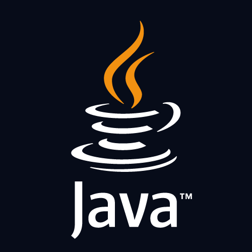
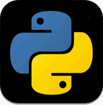

C++ is an object-oriented programming language which gives a clear structure to programs and allows code to be reused, lowering development costs. C++ is portable and can be used to develop applications that can be adapted to multiple platforms.
JAVA
Java is a programming language and a platform. Java is a high level, robust, object-oriented and secure programming language.Java was developed by Sun Microsystems (which is now the subsidiary of Oracle) in the year 1995. James Gosling is known as the father of Java. Before Java, its name was Oak. Since Oak was already a registered company, so James Gosling and his team changed the name from Oak to Java.
Python
Python is a high-level, general-purpose programming language. Its design philosophy emphasizes code readability with the use of significant indentation. Python is dynamically typed and garbage-collected. It supports multiple programming paradigms, including structured, object-oriented and functional programming.